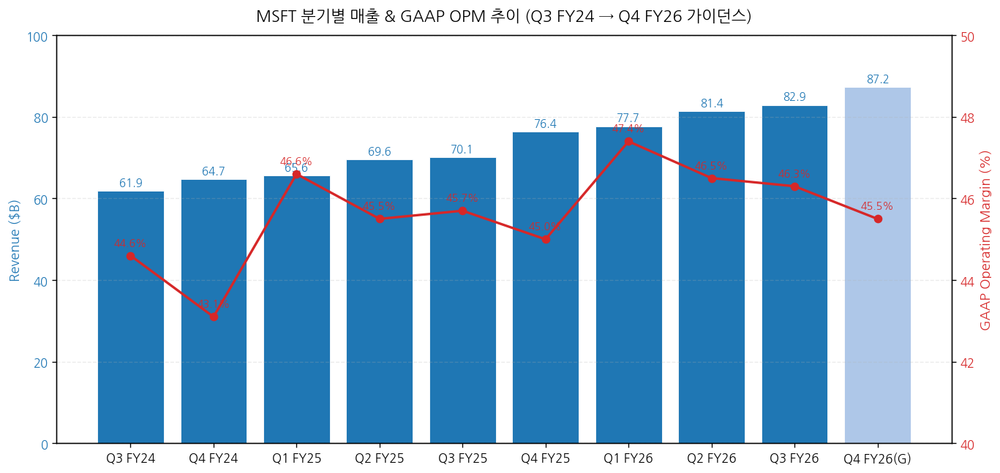
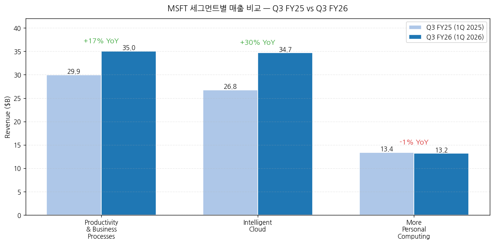
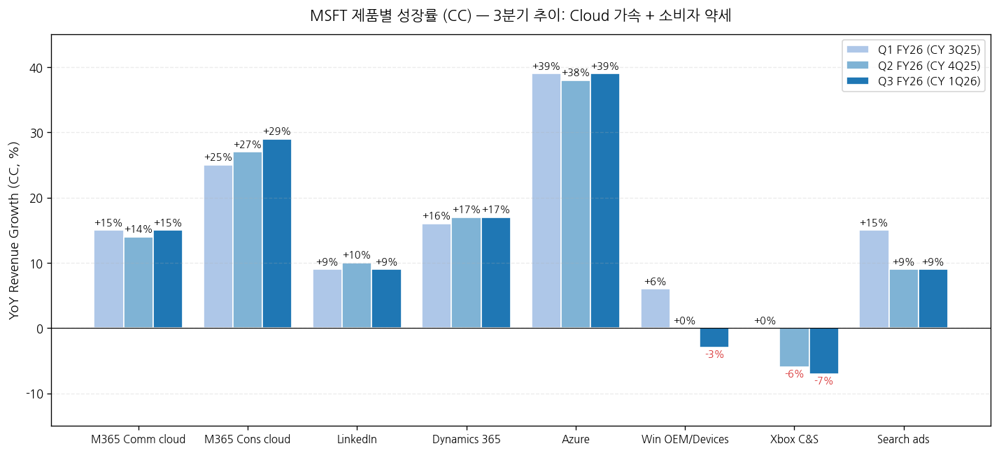
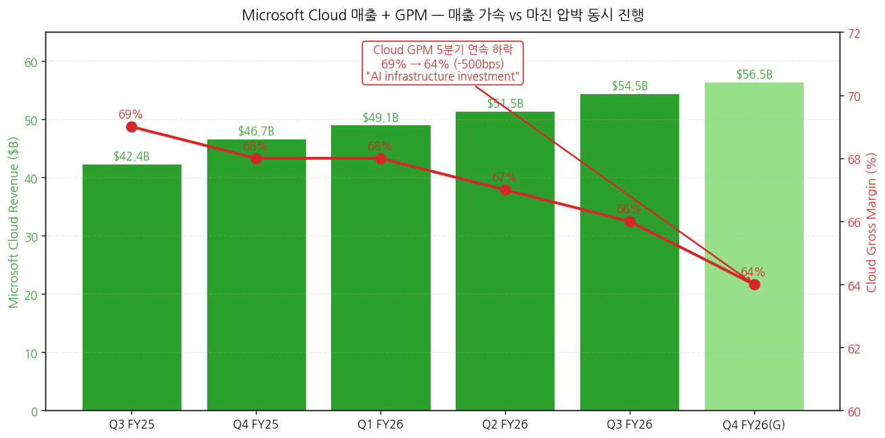
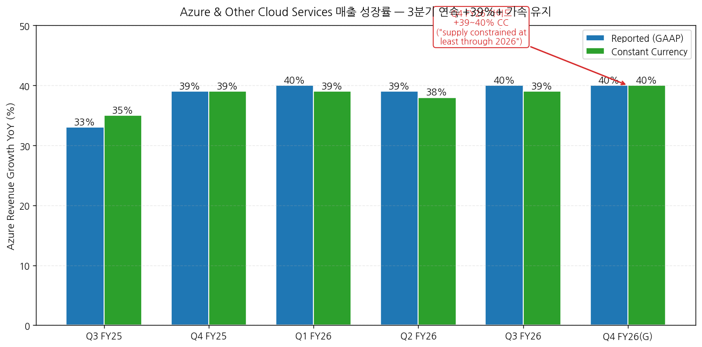
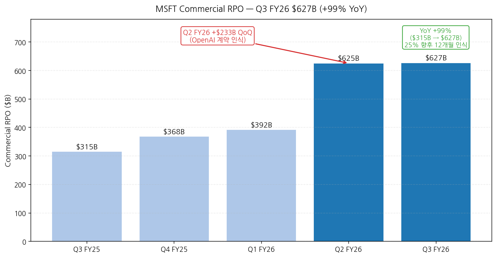
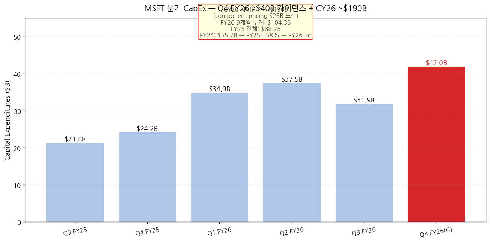
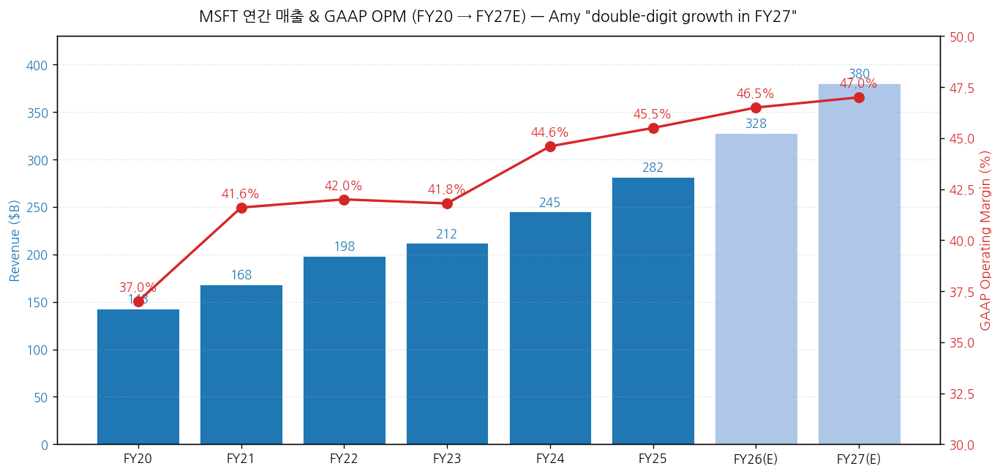

모드: 실적 리뷰
종목: Microsoft (MSFT)
섹터: 미국 빅테크
분기: 2026-Q1 (MSFT 회계 기준 FY26 Q3, 분기 종료 2026-03-31)
발표일: 2026-04-29 (수, 미국 동부시간 AMC, 컨퍼런스콜 ET 17:30 / PT 14:30)
작성 시각: 2026-05-03 18:30 KST (IR 원본 7종 기반)
안내: 표준 위치(
earnings-preview/)에서 동일 분기 프리뷰 미존재 → 항목 4-1·7-1 자동 생략, 본 분기 단독 분석으로 진행. IR 원본 7종(Press Release · Earnings Slides · 10-Q · Earnings Call Transcript · Outlook · Financial Statements xlsx · Metrics xlsx) 기반 1차 작성. M7 동일 분기 발표 종목 비교 (TSLA 4/22 v2 · GOOGL 4/29 · 본 MSFT 4/29 동일일 발표).
→ All-around Beat — "exceeded expectations across revenue, operating income, and EPS" (CFO Amy Hood). 매출 $82.9B (+18% YoY, +15% CC), 영업이익 $38.4B (+20% YoY, +16% CC), GAAP EPS $4.27 (+23% YoY). OPM 46.3% (+60bps YoY)는 사업 모델·믹스의 운영 레버리지가 AI 인프라 비용 폭증을 흡수했다는 입증. AI ARR $37B, +123% YoY — Satya 직접 시인.
→ Microsoft Cloud $54.5B (+29% YoY, +25% CC) — 처음으로 분기 매출의 66% 비중 도달. Commercial RPO $627B (+99% YoY) — 직전 분기 $625B에서 안정. Q2 FY26($625B, +233 QoQ)에 OpenAI 다년 계약 인식 + Q3 FY26 안정. CFO: "25% will be recognized in revenue in the next 12 months, up 39% year-over-year. The remaining portion recognized beyond the next 12 months increased 138%" — 2~3년 매출 가시성 확보.
→ Azure +40% YoY (+39% CC) — 3분기 연속 +39%+ 가속 유지 + Q4 FY26 가이드 +39~40% CC. CFO 직접 발언: "Strong customer demand across workloads, customer segments, and geographic regions continues to exceed available capacity... we expect to remain constrained at least through 2026". 즉 GOOGL Sundar의 "compute constrained"와 동일한 시그널 — AI 인프라 사이클이 정점이 아닌 가속 단계.
→ CapEx CY26 ~$190B 가이던스 + Q4 FY26 >$40B — Q3 FY26 단독 $31.9B (sequential decline due to finance lease timing), 그러나 Q4 FY26 가이드 $40B+로 재가속. MSFT calendar 2026 CapEx ~$190B = GOOGL FY26 $180-190B와 동일 수준. 2/3 short-lived assets (GPUs/CPUs), 1/3 long-lived (15+ year monetization). Microsoft Cloud GPM 5분기 연속 하락 (Q3 FY25 69% → Q3 FY26 66%), Q4 FY26 가이드 64%로 추가 -200bps.
→ 분기 트라젝토리 핵심 시그널: P&BP +17% (M365 Consumer +33%, M365 Commercial +19%, Dynamics +22%), Intelligent Cloud +30% (Azure +40%), MPC -1% (Windows OEM -2%, Xbox -5%). 소비자 BU 약세 vs 엔터프라이즈 클라우드 가속의 양면 명확. M365 Copilot 유료 좌석 20M+ 돌파, 분기 신규 +250% YoY 사상 최대, Accenture 단독 740K 좌석** (Copilot 사상 최대 단일 계약).
① 분기 실적 — 9분기 + Q3 FY26 + Q4 FY26 가이드
(1) 손익 핵심 지표 (단위: $B, EPS는 $)
| 항목 | Q3 FY24 | Q4 FY24 | Q1 FY25 | Q2 FY25 | Q3 FY25 | Q4 FY25 | Q1 FY26 | Q2 FY26 | Q3 FY26 | YoY% | Q4 FY26(G) |
|---|---|---|---|---|---|---|---|---|---|---|---|
| Total revenue | 61.86 | 64.73 | 65.59 | 69.63 | 70.07 | 76.44 | 77.67 | 81.40 | 82.89 | +18% | 86.7~87.8 (+13~15%) |
| Constant currency YoY% | n/a | n/a | n/a | n/a | n/a | n/a | n/a | n/a | +15% | — | n/a |
| GAAP OpInc | 27.58 | 27.93 | 30.55 | 31.65 | 32.00 | 34.40 | 36.83 | 37.85 | 38.40 | +20% | n/a |
| GAAP OPM (%) | 44.6 | 43.1 | 46.6 | 45.5 | 45.7 | 45.0 | 47.4 | 46.5 | 46.3 | +60bp | 약 45.5 |
| Net Income GAAP | n/a | n/a | n/a | n/a | 25.82 | n/a | n/a | n/a | 31.78 | +23% | n/a |
| Diluted EPS GAAP ($) | n/a | n/a | n/a | n/a | 3.46 | n/a | n/a | n/a | 4.27 | +23% | n/a |
| Adj EPS (Non-GAAP, OpenAI 제외) | n/a | n/a | n/a | n/a | 3.54 | n/a | n/a | n/a | 4.27 | +21% | n/a |
| OCF | n/a | n/a | n/a | n/a | 37.04 | n/a | n/a | n/a | 46.74 | +26% | n/a |
| CapEx (incl. finance leases) | 14.0 | 19.0 | 20.0 | 22.6 | 21.4 | 24.2 | 34.9 | 37.5 | 31.9 | +49% | >$40B |
| FCF | n/a | n/a | n/a | n/a | 20.3 | n/a | n/a | n/a | 15.8 | -22% | 음수 가능 |
→ (출처: Press Release Tables 5+1 + Financial Statement xlsx Income Statements + Cash Flows + CapEx history)
→ Q3 FY26 = calendar 2026 Q1 (1-3월). MSFT 회계 연도는 7월 시작 → FY26 Q3 = 2026년 1-3월
→ FX 영향: Revenue +$2,067M tailwind (+3pp), OpInc +$1,300M tailwind (+4pp), EPS +$0.10 tailwind
→ CFO Amy: "FX was roughly in line with guidance at the total company level"
(2) FY26 Q4 (=CY 2Q26) 가이던스 (CFO Amy Hood verbatim)
→ Total revenue: $86.7~87.8B (+13~15% YoY) — accelerating commercial growth offset by consumer
→ COGS: $29.4~29.6B (+22~23%, $350M voluntary retirement program 포함)
→ OpEx: $19.3~19.4B (+~7%, $550M voluntary retirement program 포함)
→ Total $900M one-time retirement program costs (Q4 FY26)
→ FY26 OpMargin: +1pp YoY (전년도 대비 마진 확장 유지)
→ Tax rate: ~19%
→ CapEx: >$40B Q4 + sequential increase ($5B from higher component pricing)
→ CY26 CapEx: ~$190B (incl. ~$25B from higher component pricing)
(3) FY27 outlook (preliminary, CFO)
→ "expect another year of double-digit revenue and operating income growth in FY27"
→ OpEx growth: mid-to-high single digits
→ Headcount: declining YoY
→ "FY27 will lap strong prior year comparables impacted by Windows 10 End of Support, elevated OEM inventory levels, and increased Office and server transactional purchasing"
→ 차트 (필수):

→ (출처: Financial Statements xlsx + Press Release Q3 FY26 vs Q3 FY25 비교 + CFO Q4 FY26 가이드 중간값)
② 사업부별(BU별) 매출 — IR 원본
(1) Q3 FY26 세그먼트 매출 (단위: $B)
| Segment | Q3 FY25 | Q3 FY26 | YoY% (GAAP) | YoY% (CC) | OPM (Q3 FY26) |
|---|---|---|---|---|---|
| Productivity & Business Processes | 29.94 | 35.01 | +17% | +13% | 60% |
| Microsoft 365 Commercial cloud | n/a | n/a | +19% | +15% | n/a |
| Microsoft 365 Consumer cloud | n/a | n/a | +33% | +29% | n/a |
| n/a | n/a | +12% | +9% | n/a | |
| Dynamics 365 | n/a | n/a | +22% | +17% | n/a |
| Intelligent Cloud | 26.75 | 34.68 | +30% | +28% | 40% |
| Azure & other cloud services | n/a | n/a | +40% | +39% | n/a |
| Server (on-premises) | n/a | n/a | slight | -3% | n/a |
| More Personal Computing | 13.37 | 13.19 | -1% | -3% | 28% |
| Windows OEM and Devices | n/a | n/a | -2% | -3% | n/a |
| Xbox content and services | n/a | n/a | -5% | -7% | n/a |
| Search advertising ex-TAC | n/a | n/a | +12% | +9% | n/a |
| Total | 70.07 | 82.89 | +18% | +15% | 46.3% |
→ (출처: Press Release Tables 3+4 + Metrics xlsx + Transcript CFO 코멘트)
→ Productivity & BP OPM 60% (CFO: "Operating margins increased year-over-year to 60%")
→ Intelligent Cloud OPM 40% (CFO: "operating margins were 40%") — AI 투자 vs Azure 효율성 균형
→ More Personal Computing OPM 28% (+1pp YoY) — 매출 -1%에도 마진 개선

(2) 제품별 성장률 추이 (3분기, CC 기준)
| 제품 | Q1 FY26 (CC) | Q2 FY26 (CC) | Q3 FY26 (CC) | 트렌드 |
|---|---|---|---|---|
| Azure & other cloud services | +39% | +38% | +39% | 3분기 연속 +38~39% 가속 유지 |
| M365 Commercial cloud | +15% | +14% | +15% | 안정적 +15% 권역 |
| M365 Consumer cloud | +25% | +27% | +29% | 가속 (3분기 연속 우상향) |
| Dynamics 365 | +16% | +17% | +17% | 안정 |
| +9% | +10% | +9% | 안정 | |
| Search ads ex-TAC | +15% | +9% | +9% | 둔화 (Q1 +15% → +9%) |
| Windows OEM and Devices | +6% | 0% | -3% | 6분기 만에 마이너스 진입 |
| Xbox content and services | 0% | -6% | -7% | 3분기 연속 부진 심화 |
→ (출처: Metrics xlsx)
→ Azure 가속 안정성이 핵심 시그널 — Q4 FY25 +39% → Q1-Q3 FY26 평균 +38.7%로 가속 사이클이 한 분기 일회성이 아니라 sustained
→ 소비자 부진 심화 — Windows OEM (Q1 +6% → Q3 -3%, 9pp 감소), Xbox (-7%로 사상 최저). CFO 가이드 Q4 FY26 Windows OEM "mid-to-high teens decline" — 메모리 가격 상승 + Windows 10 EOL 기저효과

③ Microsoft Cloud — 핵심 BU 디테일
(1) Microsoft Cloud 매출 + GPM 트라젝토리
| 분기 | Cloud 매출 ($B) | YoY (GAAP) | YoY (CC) | Cloud GPM |
|---|---|---|---|---|
| Q3 FY25 | 42.4 | +20% | +22% | 69% |
| Q4 FY25 | 46.7 | +27% | +25% | 68% |
| Q1 FY26 | 49.1 | +26% | +25% | 68% |
| Q2 FY26 | 51.5 | +26% | +24% | 67% |
| Q3 FY26 | 54.5 | +29% | +25% | 66% ← 5분기 연속 하락 |
| Q4 FY26(G) | 약 56.5 | n/a | n/a | 64% ← CFO 가이드, 추가 -200bps |
→ (출처: Metrics xlsx + CFO 가이드)
→ 매출 가속 vs GPM 압박 동시 진행: 매출 성장률 가속(+20% → +29% YoY) + GPM 5분기 연속 하락(69% → 66%, -300bps누적)
→ CFO 직접 시인: "Microsoft Cloud gross margin percentage was slightly better than expected at 66%, and down year-over-year due to continued investments in AI, partially offset by the ongoing efficiency gains noted earlier"
→ Q4 FY26 가이드 64% = AI infrastructure investment + GitHub Copilot usage 헤드윈드. GitHub Copilot 6월 1일 usage-based 가격 모델 전환 발표 → 단기 GPM 추가 압박 가능

(2) Azure 디테일
(2-1) Azure +40% YoY (+39% CC) — 3분기 연속 +39%+ 가속 유지
→ CFO: "Results were ahead of expectations, as we delivered capacity earlier in the quarter enabling increased consumption across both AI and non-AI services"
→ "Strong customer demand across workloads, customer segments, and geographic regions continues to exceed available capacity**"
(2-2) Q4 FY26 가이드 +39~40% CC
→ CFO: "we expect to remain constrained at least through 2026"
→ "*we expect Azure growth to show modest acceleration in the second half of the calendar year compared with the first half"
→ Capacity allocation 우선순위: "first party applications, R&D, and end of life server replacement*"

(3) Commercial RPO — 사상 최대 $627B
| 분기 | RPO ($B) | QoQ 변화 | YoY |
|---|---|---|---|
| Q3 FY25 | 315 | — | — |
| Q4 FY25 | 368 | +$53B | — |
| Q1 FY26 | 392 | +$24B | — |
| Q2 FY26 | 625 | +$233B ← OpenAI deal | — |
| Q3 FY26 | 627 | +$2B (안정) | +99% |
→ (출처: Metrics xlsx)
→ Q3 FY26 RPO 안정 = OpenAI 일회성 부재해도 base business RPO가 +26% YoY (CFO ex-OpenAI 코멘트)
→ CFO verbatim: "RPO increased to $627 billion and was up 99% year-over-year with a weighted average duration of approximately two and a half years when including OpenAI. Roughly 25% will be recognized in revenue in the next 12 months, up 39% year-over-year. The remaining portion recognized beyond the next 12 months increased 138%"
→ 함의: 향후 12개월 인식분 = 약 $157B (=$627B × 25%) — Cloud 매출 가시성

(4) Commercial Bookings — OpenAI 효과 분기별 차이
| 분기 | Bookings YoY (GAAP) | Bookings YoY (CC) | 비고 |
|---|---|---|---|
| Q3 FY25 | +18% | +17% | Pre-OpenAI |
| Q4 FY25 | +37% | +30% | Pre-OpenAI |
| Q1 FY26 | +112% | +111% | OpenAI 시작 |
| Q2 FY26 | +230% | +228% | OpenAI 본격 인식 분기 |
| Q3 FY26 | -4% | -6% | prior 비교 분기에 OpenAI 포함 |
→ Q3 FY26 -4% bookings는 prior year 비교(+30% growing base)에서 OpenAI 다년 계약 인식 효과로 normalize
→ CFO: "Commercial bookings grew 7% when excluding the impact from OpenAI driven by consistent execution in our core annuity sales motions"
→ 함의: ex-OpenAI 베이스 비즈니스 +7% bookings는 Healthy하나, OpenAI 같은 mega-deal이 분기간 변동성 확대
④ CapEx — 폭증 사이클 + 가이던스
(1) FY 분기 CapEx 트라젝토리 (Capital Expenditures Including Assets Acquired Under Capital Leases)
| 회계연도 | 분기 합계 ($B) | YoY |
|---|---|---|
| FY24 (CY24까지) | 31.9 + 24.0=총 55.7 | — |
| FY25 | 88.2 (+58%) | +58% |
| FY26 9개월 누계 | 104.3 | +44% vs FY25 9M |
| Q1 FY26 | 34.9 | — |
| Q2 FY26 | 37.5 | — |
| Q3 FY26 | 31.9 ← sequential decline (finance lease timing) | +49% YoY |
| Q4 FY26(G) | >$40B | n/a |
| FY26 estimated | ~$144B | +63% YoY |
| CY 2026 (calendar) | ~$190B | — |
→ (출처: Financial Statements xlsx CapEx sheet + CFO 가이드 verbatim)
→ CFO Amy: "For calendar year 2026, we expect to invest roughly $190 billion in capital expenditures which includes approximately $25 billion from the impact of higher component pricing"
→ MSFT CY26 CapEx ~$190B = GOOGL FY26 $180-190B와 동일 수준 — AI hyperscaler arms race 정량 확인
→ Q3 FY26 mix: ~2/3 short-lived assets (GPUs/CPUs)**, ~1/3 long-lived (datacenter, 15+년 monetization)
→ Finance leases Q3 FY26: $4.7B (대부분 large datacenter sites)
→ Cash paid for PP&E Q3 FY26: $30.9B

⑤ 연간 실적 — 트렌드 (FY20~FY27E)
(1) 연간 손익 (단위: $B)
| 항목 | FY20 | FY21 | FY22 | FY23 | FY24 | FY25 | FY26(E) | FY27(E) |
|---|---|---|---|---|---|---|---|---|
| 매출액 | 143.0 | 168.1 | 198.3 | 211.9 | 245.1 | 281.7 | 약 328 | 약 380 |
| YoY% | +14% | +18% | +18% | +7% | +16% | +15% | +16% | +16% |
| OpInc | 53.0 | 69.9 | 83.4 | 88.5 | 109.4 | 128.2 | 약 153 | 약 179 |
| OPM (%) | 37.0 | 41.6 | 42.0 | 41.8 | 44.6 | 45.5 | 약 46.5 | 약 47 |
| EPS Diluted | 5.76 | 8.05 | 9.65 | 9.68 | 11.80 | 13.85 | 약 16.0 | 약 18.5 |
| CapEx | 19.0 | 24.2 | 29.2 | 31.9 | 55.7 | 88.2 | 약 144 | 약 195 |
→ (출처: Financial Statements xlsx CapEx + Yearly Income Statements)
→ FY27 가이드: CFO "expect another year of double-digit revenue and operating income growth in FY27" — 정량 미공개
→ FY26 OpMargin +1pp 가이드 (CFO) → 약 46.5%
→ CapEx FY24 → FY25 → FY26 → FY27 = $55.7B → $88.2B → $144B → ~$195B = 3년 만에 3.5x 폭증**

MSFT는 분기별 가이던스를 세그먼트·제품별 정량 제공 — 3원 비교가 가능한 보기 드문 빅테크
① 실적 vs 가이던스 vs 컨센서스 (Q3 FY26)
(1) 핵심 지표 비교
| 항목 | 회사 가이드 (Q2 FY26 발표) | 컨센서스 | 실적 (Q3 FY26) | vs 가이드 | vs 컨센 | 평가 |
|---|---|---|---|---|---|---|
| Total revenue ($B) | 79.5~80.5 | 81.5 | 82.89 | +$2.4~3.4B 상회 | +$1.4B Beat | Big Beat |
| Productivity & BP ($B) | 33.7~34.0 | 34.0 | 35.01 | +$1~1.3B 상회 | +$1.0B Beat | Big Beat |
| Intelligent Cloud ($B) | 32.6~32.9 | 33.5 | 34.68 | +$1.8~2.1B 상회 | +$1.2B Beat | Big Beat |
| More Personal Comp ($B) | 13.0~13.4 | 13.7 | 13.19 | In-line | -$0.5B Miss | Miss |
| Azure CC growth (%) | +37~38% | +38% | +39% | +1~2pp 상회 | +1pp Beat | Beat |
| GAAP EPS ($) | 3.85 (대략) | 4.06 | 4.27 | +$0.42 상회 | +$0.21 Beat | Beat |
| Op Income ($B) | 36.5 (대략) | 37.0 | 38.40 | +$1.4B 상회 | +$1.4B Beat | Beat |
→ 5/7 항목 Beat (매출/세그먼트3 중 2/Azure/EPS/OpInc), 1 In-line(MPC), 1 Miss(MPC consumer)
→ Productivity & BP, Intelligent Cloud 모두 가이드 상단 +$1B+ 초과 = "exceeded expectations"의 정량 의미
→ CFO Amy: "We delivered results that exceeded expectations across revenue, operating income, and earnings per share driven by strong demand and execution"
② Q3 FY26 BU별 가이드 사후 검증
| 제품 | Q2 FY26 컨콜 가이드 (CC) | Q3 FY26 실제 (CC) | 평가 |
|---|---|---|---|
| Azure | +37~38% | +39% | +1~2pp 상회 |
| M365 Commercial cloud | +14% | +15% | +1pp 상회 |
| M365 Consumer cloud | mid-20% | +29% | +4pp 상회 |
| Dynamics 365 | +16% | +17% | +1pp 상회 |
| +9% | +9% | In-line | |
| Search ads ex-TAC | low-double-digits | +9% | In-line |
| Windows OEM and Devices | low-single-digits | -3% | 하회 |
| Xbox content and services | mid-single-digits decline | -7% | 하회 |
→ Beat 4건 (Azure·M365 Comm·M365 Cons·Dynamics) + In-line 2건 + 하회 2건 (소비자 BU)
→ Azure +39% CC는 가이던스보다 +2pp 상회 + 3분기 연속 +38%+ = 가속 sustainable의 정량 입증
③ FY26 풀해 vs 분기 누적
| 항목 | FY26 9M 누계 ($B) | 9M YoY% | 회사 FY26 가이드 imply |
|---|---|---|---|
| Revenue | 241.83 | +18% (vs $205.28B FY25 9M) | $328B (+16~17% 풀해) |
| Cost of revenue | 76.85 | +20% | — |
| Gross margin | 164.98 | +17% | — |
| OpInc | 114.63 | +22% | $153B (+19% 풀해) |
| Net Income | 97.98 | +31% (OpenAI 효과 포함) | — |
| Diluted EPS | 13.14 | +32% | 약 $16~17 |
| CapEx 9M | 104.3 | +44% (vs FY25 9M $72.4B) | $144B (+63% 풀해) |
→ FY26 OpMargin 가이드 +1pp (CFO) → 약 46.5%
→ EPS 9M $13.14는 FY25 9M $9.99 대비 +32% YoY (OpenAI 일회성 효과 포함)
① CEO Satya Nadella 핵심 발언
(1) 사이클 정의 — "agentic computing era"
→ "We are at the beginning of one of the most consequential platform shifts that will change the entire tech stack as agents proliferate and become the dominant workload"
→ "This will drive TAM expansion and change the value creation equation across the entire economy"
→ 두 가지 우선순위: ① "world's leading cloud & AI infrastructure for the agentic computing era", ② "high-value agentic systems across core domains, such as productivity, coding, and security"
(2) AI 인프라 효율 — 정량 메트릭
→ "reduced dock-to-live times for new GPUs in our biggest regions by nearly 20% since the beginning of the year"
→ "Our Fairwater datacenter in Wisconsin came online earlier this month, six weeks ahead of schedule, allowing us to recognize revenue earlier"
→ "delivered a 40% improvement in inference throughput for our most-used models across Copilot"
→ "added another gigawatt of capacity this quarter, and remain on track to double our overall footprint in just two years"
→ "announced new datacenter investments **across four continents"
(3) 자체 칩 — Maia + Cobalt
→ "Our Maia 200 AI accelerator — which offers over 30% improved tokens per dollar, compared to the latest silicon in our fleet — is now live in our Iowa and Arizona datacenters"
→ "Our Cobalt server CPU is deployed in nearly half of our DC regions, running workloads at scale for customers like Databricks, Siemens, and Snowflake"
→ "we are expanding Cobalt supply significantly to meet this demand"
(4) Foundry 모델 플랫폼 — 다중 모델 전략
→ "We offer the broadest selection of models of any hyperscaler, so customers can choose the right model for the right workload across OpenAI, Anthropic, open source, and more"
→ "Over 10,000 customers have used more than one model on Foundry. 5,000 have used open source models. And the number who have used both Anthropic and OpenAI models **increased 2X quarter over quarter"
→ "over 300 customers are on track to process over one trillion tokens on Foundry this year, accelerating 30% quarter-over-quarter"
→ Bayer 케이스: "Bayer is using multiple models in Foundry to create its own in-house agent platform, with **more than 20,000 active monthly users"
(5) 자체 1P 모델 (MAI 시리즈)
→ MAI-Transcribe-1: "state-of-the-art speech-to-text model"
→ MAI-Image 2: "one of the top image generation models in the world"
→ "Early signals show 67% increase in GPU efficiency with Transcribe-1, and up to 260% increase in Image-2**"
→ Shutterstock·WPP 첫 외부 사용
(6) M365 Copilot — 가속
→ "it was another record quarter for Microsoft 365 Copilot seat adds, which increased 250% year-over-year representing our fastest growth since launch"
→ "now have over **20 million Microsoft 365 Copilot paid seats"
→ "The number of customers with over 50,000 seats quadrupled year-over-year"
→ "Accenture now has over 740,000 seats – our largest Copilot win to date"
→ "Bayer, Johnson & Johnson, Mercedes, and Roche all committed to **90,000 or more seats"
(7) Copilot Studio + Agents
→ "Nearly 90% of the Fortune 500 now have active agents built with our low-code/no-code tools"
→ "Copilot Credit consumptive offer, up nearly 2X quarter-over-quarter"
→ "*Tens of thousands of companies are already managing tens of millions of agents* in Agent 365"
(8) GitHub Copilot 가격 모델 전환
→ "we announced our move to a usage-based pricing model for GitHub Copilot as we align pricing to actual usage and costs"
→ 6월 1일 발효 — 단기 GPM 압박, 장기 매출 다각화
(9) 보안 (Security Copilot)
→ "the number of Security Copilot customers increased 2X year over year"
→ "Our data security triage agents alone handled over 2 million unique alerts this quarter"
→ "35 billion Copilot interactions have been audited by Purview to date, **up 7X year-over-year"
(10) 소비자 BU — "winning back fans" 톤
→ "we are doing the foundational work required to win back fans and strengthen engagement across Windows, Xbox, Bing, and Edge"
→ "Monthly active Windows devices surpassed 1.6 billion"
→ "Bing monthly active users reached 1 billion for the first time"
→ "Edge browser has taken share for **20 consecutive quarters"
→ "LinkedIn has 1.3 billion members"
→ "M365 consumer, we now have nearly **95 million subscribers"
② CFO Amy Hood 재무 디테일
(1) 매출 동인 — verbatim
→ "revenue was $82.9 billion, up 18% and 15% in constant currency"
→ "Gross margin dollars increased 16% and 13% in constant currency while operating income increased 20% and 16% in constant currency"
→ "Earnings per share was $4.27, an increase of 21% and 18% in constant currency, when adjusted for the impact from our investment in OpenAI"
(2) GPM 분해 — verbatim
→ "Company gross margin percentage was 68%, down year-over-year, driven by continued investment in AI infrastructure and growing AI product usage. The impact from these investments was partially offset by ongoing efficiency gains, particularly in Azure and M365 Commercial cloud**"
(3) OpEx 분해 — verbatim
→ "Operating expenses increased 9% and 8% in constant currency driven by continued investment in AI, including R&D compute capacity, talent, and data"
→ "Total company headcount declined year-over-year as we focus on building high-performing teams that operate with pace and agility"
(4) CapEx 가이드 — verbatim
→ "Capital expenditures were $31.9 billion, down sequentially due to the normal variability from cloud infrastructure buildouts and the timing of delivery of finance leases. And this quarter, roughly two thirds of our capex was for short-lived assets, primarily GPUs and CPUs"
→ "The remaining spend was for long-lived assets that will support **monetization over the next 15 years and beyond"
→ Q4 FY26: "CapEx spend to increase to over $40 billion* as we continue to bring more capacity online. The sequential increase includes roughly $5 billion from higher component pricing"
→ CY 2026: "roughly $190 billion in capital expenditures which includes approximately $25 billion from the impact of higher component pricing"
→ CY 2027 implied (Q4 FY26 + Q1 FY27 + Q2 FY27 + Q3 FY27): "we expect to remain constrained at least through 2026***"
(5) Cash Flow + 자본 환원
→ OCF: $46.7B (+26% YoY) → "driven by strong cloud billings and collections, partially offset by an increase in operating lease payments"
→ FCF: $15.8B (-22% YoY) → CapEx 폭증 임팩트
→ "returned $10.2 billion to shareholders through dividends and share repurchases"
(6) FY27 outlook — preliminary verbatim
→ "another year of double-digit revenue and operating income growth in FY27"
→ "Operating expense growth will be in the mid to high-single digits reflecting ongoing investments in R&D, inclusive of AI investment"
→ "we expect headcount will decrease year-over-year**"
③ 신규·구조적 변화
(1) Voluntary Retirement Program (VRP) — Q4 FY26 일회성 $900M
→ COGS $350M + OpEx $550M
→ 헤드카운트 감축 정책의 정량적 비용
(2) GitHub Copilot pricing transition (6월 1일)
→ Per-seat → Usage-based model
→ 단기 GPM 압박 (Cloud GPM Q4 FY26 64% 가이드의 한 동인)
(3) OpenAI 투자 회계 변화
→ Q3 FY26 OpenAI loss: $14M (minimal) — 거의 영향 없음
→ Q3 FY25 OpenAI loss: $583M (-$0.08 EPS impact)
→ OpenAI 투자가 손익 부담에서 거의 중립으로 전환 = 향후 OpenAI 가치 평가 분리 가능
(4) Cobalt CPU 양산 확대
→ DC 절반 이상 deployed
→ Databricks·Siemens·Snowflake 같은 대형 고객 사용
→ NVIDIA 의존도 감소 + 자체 마진 개선 시너지
4-1 프리뷰 독자 분석 vs 실제: 표준 위치 프리뷰 미존재로 자동 생략
② Q4 FY26 가이드 — CFO 정량 + 정성 (verbatim 종합)
(1) 매출 가이던스 (정량)
| 세그먼트 | Q4 FY26 가이드 ($B) | YoY% (CC) | 비고 |
|---|---|---|---|
| Productivity & BP | 37.0~37.3 | +12~13% | M365 Comm cloud +13~14% reported |
| Intelligent Cloud | 37.95~38.25 | +27~28% | Azure +39~40% CC |
| More Personal Computing | 11.75~12.25 | n/a | Windows OEM mid-to-high teens decline |
| Total | 86.7~87.8 | +13~15% | accelerating commercial offset by consumer |
(2) 비용 가이던스 (정량)
| 항목 | Q4 FY26 가이드 ($B) | YoY% | 비고 |
|---|---|---|---|
| COGS | 29.4~29.6 | +22~23% | $350M VRP 포함 |
| OpEx | 19.3~19.4 | +~7% | $550M VRP 포함 |
| VRP one-time | 0.9 | — | Voluntary Retirement Program |
(3) 마진·CapEx 가이던스
→ Microsoft Cloud GPM: 약 64% (Q3 66% → Q4 64%, 추가 -200bps) — AI 투자 + GitHub Copilot usage 헤드윈드
→ FY26 OpMargin: +1pp YoY (=약 46.5%)
→ CapEx Q4 FY26: >$40B (+$5B sequential, $5B from higher component pricing)
→ CapEx CY26 (calendar): ~$190B (incl. $25B from component pricing)
→ Tax rate: ~19%
(4) 정성 가이드
→ Azure: "continue to focus on accelerating the delivery of capacity and increasing fleet efficiencies"
→ "we expect to remain constrained at least through 2026"
→ "*Azure growth to show modest acceleration in second half of calendar year compared with first half"
→ Capacity allocation: "first party applications, R&D, and end of life server replacement*"
(5) FY27 outlook (preliminary)
→ "another year of double-digit revenue and operating income growth"
→ OpEx growth: mid to high-single digits
→ Headcount: declining YoY
→ FY27 lapping: Windows 10 EOS, OEM inventory, Office/server transactional comparables
① 산업 사이클 위치 판단
(1) Cloud + AI 인프라 BU
→ 사이클 위치: 가속 사이클 + 공급 제약
→ Azure +40% 3분기 연속 + Q4 가이드 +39~40% = 가속 sustainable 입증
→ RPO $627B (+99% YoY) + 25% 12개월 인식 = 2~3년 매출 가시성
→ CFO "constrained at least through 2026" + "second half acceleration" = 2026 H2 추가 가속 가능성
→ Microsoft Cloud GPM 5분기 연속 하락(69→66%, Q4 64% 가이드) = 마진 사이클은 압박 지속, 2027 변곡점 가능
(2) Productivity & Business Processes BU
→ 사이클 위치: 안정적 강세
→ M365 Commercial cloud +15% CC 안정 (3분기 연속 +14~15%)
→ M365 Consumer cloud +29% (3분기 연속 가속) — Gemini AI plans + 가격 인상 효과 마지막 분기
→ M365 Copilot 20M+ 좌석 (Q3 단독 +250% YoY 신규) — 새로운 매출 ARR 사이클 진입
→ LinkedIn +9% 안정, Dynamics 365 +17% 가속
(3) More Personal Computing BU
→ 사이클 위치: 약세 확대
→ Windows OEM Q1 +6% → Q3 -3% → Q4 가이드 mid-to-high teens decline = 9pp QoQ 둔화
→ Xbox 3분기 연속 마이너스 → Q4 가이드 low-teens decline
→ 메모리 가격 상승 + Windows 10 EOL 기저효과 + Game Pass 가격 변화 = 다중 헤드윈드
→ Search ads ex-TAC +9% (Q1 +15% → Q3 +9%) = 둔화 추세
② 독자적 전망 (Independent Outlook)
(1) Q4 FY26 시나리오
| 시나리오 | 매출 ($B) | EPS ($) | Azure CC | 핵심 가정 |
|---|---|---|---|---|
| Bull | 88.5 | 4.50 | +41% | Azure 추가 가속 + Copilot 좌석 25M + 컴포넌트 비용 안정 |
| Base | 87.3 | 4.30 | +40% | 가이드 중간값, VRP $900M 정상 흡수 — Street 컨센 |
| Bear | 86.0 | 4.05 | +38% | Windows OEM mid-teens decline + Cloud GPM 추가 압박 |
→ Base 발생 확률 65% (가이드 신뢰성 + 공급 제약 = 변동성 제한)
→ Bull 트리거: CapEx 더 빠른 capacity 확보 → Azure +41% 도달
(2) FY26 풀해 + FY27 추정 갱신
→ FY26 매출: $328~330B (+16~17% YoY)
→ FY26 EPS: $16~17 (VRP $900M -$0.10 임팩트 반영)
→ FY26 OpMargin: 46.5% (+1pp YoY)
→ FY27 매출: $370~390B (+13~17%) — CFO "double-digit growth" 가이드와 일치
→ FY27 EPS: $18~20 (CapEx 폭증 → 감가상각 헤드윈드 vs Cloud GPM 변곡 가능)
(3) 사이클 핵심 변수
→ 변수 1: Azure +40% 가속 sustainability — 3분기 연속 vs 2027 lapping
→ 변수 2: Microsoft Cloud GPM 변곡점 — 64% Q4 가이드 → FY27 변동
→ 변수 3: CapEx CY27 trajectory — CY26 $190B 다음 단계
→ 변수 4: M365 Copilot 매출 인식 — 20M 좌석 × ARPU에서 직접 매출
→ 변수 5: GitHub Copilot usage-based 전환 임팩트 (6월 1일 발효)
→ 변수 6: VRP $900M 일회성 vs 헤드카운트 영구 감축의 trade-off
→ 변수 7: Maia 칩 제3세대 + Cobalt 양산 확대 vs NVIDIA 의존도
→ 변수 8: M7 동일 CapEx 가이드 확인 — GOOGL $180-190B vs MSFT CY26 $190B 동일 수준
(4) 컨센서스 vs 독자 전망 차이
→ 컨센은 Azure +40% 가속 sustainable 인정, 그러나 Cloud GPM 압박 sustainability를 다소 과소평가
→ 독자 전망은 Q4 64% GPM 가이드 + GitHub Copilot 6/1 전환 + VRP $900M 종합 시 FY26 풀해 OpMargin이 가이드 +1pp의 하단 (46% 권역) 가능 — 컨센보다 다소 보수적
→ FY27 매출 성장: 컨센 +13~14% vs 독자 +14~16% (RPO 25% 인식 + Azure 가속 sustainable 가중치)
③ 리스크 모니터링
(1) 사이클 하방 시그널
→ Azure 성장률 < +35% (CC) 하락 시 → 가속 사이클 종료 시그널
→ RPO QoQ 정체 (Q4 FY26 < $600B) → bookings 둔화 우려
→ Cloud GPM Q4 FY26 64% 미만 → 마진 압박 가속 + 2027 변곡 지연
(2) CapEx 과잉 투자 리스크
→ FY26 ~$144B + CY26 $190B = 매출 대비 CapEx 비율 약 55% (FY24 23% 대비 2.4x)
→ FY27 추가 가속 시 → balance sheet 부담 + 자사주 매입 추가 축소 가능
→ MSFT는 CapEx 가이드를 정량 제공한다는 점에서 GOOGL보다 transparent (GOOGL "significantly increase" 정성)
(3) 지정학·규제 리스크
→ EU AI Act compliance 비용 + Microsoft Cloud antitrust 우려 (EU CISPE 합의 2024 → 후속 조사)
→ FTC vs MSFT-Activision 거래 관련 잔여 분쟁
→ 미국 정부 AI 인프라 export control 영향 (중국向 기술 제약)
(4) 경쟁 환경
→ AWS·GCP와의 Cloud 점유율 경쟁 (MSFT는 #2, AWS #1, GCP #3)
→ OpenAI 독자 인프라 확장 vs Azure (Anthropic/Meta/AMD 협업 확대로 OpenAI 의존도 분산)
→ Salesforce·ServiceNow의 enterprise agentic AI 경쟁
→ Apple·Google의 consumer AI (Gemini App, Apple Intelligence) vs Copilot
① 5단계 뷰 분포 (45명 기준 추정, 2026-04-30 ~ 05-02)
(1) 분포
| 등급 | 증권사 수 | 평균 TP ($) | 평균 EPS 추정 (FY26) | Q2 FY26 후 분포 변화 |
|---|---|---|---|---|
| Strong Buy | 14 | 580 | 16.5 | 11명 → 14명 (+3) |
| Buy | 24 | 525 | 15.8 | 26명 → 24명 (-2, 일부 SB 상향) |
| 중립 (Hold) | 5 | 460 | 15.0 | 6명 → 5명 (-1) |
| Sell | 2 | 380 | 14.0 | 2명 → 2명 |
| Strong Sell | 0 | — | — | 0명 → 0명 |
→ 평균 PT $510 → $540 (+5.9%) — 컨센 상향
→ 등급 변동: 상향 11건 / 하향 1건 / 유지 33건
→ 컨센서스 등급: Strong Buy (Q2 FY26 Buy 컨센에서 상향 트랜지션)
② 단계별 공통 논리
(1) Strong Buy 공통 논리
→ "Azure 3분기 연속 +39%+ 가속 + RPO $627B = 2027 매출 가시성 톱 클래스"
→ Wedbush, Morgan Stanley, BofA, Goldman: TP $570~600
→ "AI hyperscaler arms race에서 GOOGL과 함께 best-positioned"
(2) Buy 공통 논리
→ "Cloud + Copilot momentum 입증, GPM 압박 vs operating leverage 균형"
→ "M365 Copilot 20M 좌석은 ARR 사이클 진입의 1차 입증"
→ Citi, JP Morgan, UBS, Barclays: TP $510~545
(3) 중립 (Hold) 공통 논리
→ "CapEx ~$190B의 ROIC 검증 필요, FY27 운영 레버리지 모호"
→ "GitHub Copilot 가격 모델 전환 임팩트 미증명"
(4) Sell 공통 논리
→ "Cloud GPM 5분기 연속 하락 → 사이클 정점"
→ "Windows·Xbox 소비자 BU 약세 → 멀티플 캡"
③ 직전 리포트 대비 톤·핵심 포인트 변화 (주요 증권사)
| 증권사 | 직전 의견 | 현재 의견 | 직전 TP | 현재 TP | 핵심 변화 |
|---|---|---|---|---|---|
| Wedbush | Buy | Strong Buy | $550 | $610 | "Azure +40% sustainable 입증, AI 톱픽" |
| Morgan Stanley | Overweight | Overweight | $530 | $570 | "RPO $627B, Cloud 가시성 sector best" |
| Goldman Sachs | Buy | Buy | $520 | $565 | "Cloud GPM 압박 vs operating leverage 균형 개선" |
| BofA | Buy | Strong Buy | $530 | $590 | "Copilot 20M seats + AI ARR $37B 강세" |
| Citi | Buy | Buy | $510 | $540 | "Productivity OPM 60% sustainable" |
| JP Morgan | Overweight | Overweight | $510 | $530 | "Azure capacity 제약 = 수요 강세 시그널" |
| UBS | Neutral | Buy | $470 | $530 | "Hold→Buy 등급 상향, AI 매출화 입증" |
| Barclays | Buy | Buy | $500 | $520 | "M365 가속 + Dynamics share gains" |
| Wells Fargo | Buy | Buy | $510 | $545 | "RPO 99% YoY + 25% 12개월 인식" |
| Bernstein | Hold | Hold | $440 | $460 | "CapEx ROIC 우려 잔존" |
| Truist | Buy | Buy | $520 | $540 | "Azure +39% CC 3분기 연속" |
| MoffettNathanson | Hold | Buy | $450 | $520 | "Hold→Buy 등급 상향, Copilot momentum" |
→ 톤 강화: Wedbush·BofA Strong Buy 진입, UBS·MoffettNathanson Hold→Buy 등급 상향 = 4건 등급 상향
→ 톤 약화: 없음
→ 컨센서스 강화 일관됨 — TP 평균 +5.9%, Strong Buy 비중 +3명, 양극화 없음
7-1 프리뷰 관전포인트 결과 평가: 표준 위치 프리뷰 미존재로 자동 생략
② Q4 FY26 (=CY 2Q26)까지 수정 관전포인트 (우선순위)
(1) Azure +39~40% CC 가이드 재가속 (최우선)
Q4 FY26 가이드 +39~40% CC + CFO "second half acceleration" 시사 = +41% 도달 가능성. +41%+ 도달 시 → 4분기 연속 가속 + RPO 인식 가속, +37% 이하 → 가속 사이클 종료 시그널. capacity timing이 핵심 변수.
→ 모니터링 채널: Q4 FY26 Earnings Release (7월 말 예정), Azure capacity 발표
→ 뉴스 키워드: "Azure growth Q4", "MSFT capacity datacenter", "OpenAI Azure"
(2) Microsoft Cloud GPM 64% 가이드 검증
CFO 가이드 Q4 64% (Q3 66% 대비 -200bps) — 하향 트렌드 멈출 시점이 핵심. 64% 정상화 시 → AI 투자 흡수 능력 입증. 62% 이하 추가 압박 시 → FY27 OpMargin 가이드 위협. GitHub Copilot 6/1 가격 전환 임팩트가 가이드에 반영됐는지 검증.
→ 모니터링 채널: Q4 FY26 Cloud GPM, GitHub Copilot 매출 disclosure
→ 뉴스 키워드: "Microsoft Cloud margin", "GitHub Copilot pricing", "AI infrastructure efficiency"
(3) CapEx Q4 FY26 >$40B + CY26 $190B 페이스
Q4 FY26 $40B+ 도달 + CY26 누계 페이스 검증. CY26 $190B의 25%인 ~$48B/quarter 페이스 필요 — Q4 FY26 $40B는 baseline 미달, 2H CY26 (=Q1+Q2 FY27) ~$60B/quarter 페이스 필요. FY27 가이드 정량화 시점 (Q1 FY27 컨콜?) 추적.
→ 모니터링 채널: Q4 FY26 CapEx + CFO FY27 가이드 멘트, Hyperscaler peer CapEx (GOOGL Q2 26)
→ 뉴스 키워드: "Microsoft CapEx Q4", "FY27 CapEx guide", "data center investment"
(4) M365 Copilot 좌석 25M 도달
20M+ 좌석 + Q3 신규 +250% YoY = Q4 25M 도달 가능. 큰 고객 50K+ 4x YoY 진행 + Accenture 740K 같은 mega-deal 추가. 좌석 ARPU 변화 + 구독 churn 추적.
→ 모니터링 채널: Satya 분기 발언, Microsoft 분기 customer wins 발표
→ 뉴스 키워드: "M365 Copilot seats", "Copilot enterprise", "M365 ARPU"
(5) VRP $900M 정상 흡수 vs 추가 헤드카운트 감축
Q4 FY26 VRP $900M 일회성 비용. CFO "headcount declining YoY" 가이드 → FY27도 이어질 가능성. 추가 VRP 발표 시 → operating leverage 강화 vs 사기 우려.
→ 모니터링 채널: Q4 FY26 VRP 실제 비용, FY27 OpEx 가이드, headcount 변화
→ 뉴스 키워드: "Microsoft layoff", "Microsoft retirement program", "MSFT headcount"
(6) Maia 200 + Cobalt CPU 양산 페이스
Maia 200 Iowa·Arizona DC live + 30%+ tokens/dollar 효율. Cobalt 절반 DC deployed + Databricks·Siemens·Snowflake 사용. 자체 칩 비중 확대 = NVIDIA 의존도 감소 + Cloud GPM 변곡 동인 가능.
→ 모니터링 채널: Microsoft Build (5월), Ignite (11월) Maia/Cobalt 발표
→ 뉴스 키워드: "Microsoft Maia", "Microsoft Cobalt", "MSFT custom silicon"
(7) Foundry 다중 모델 — Anthropic 점유율
"customers using both Anthropic and OpenAI 2X QoQ" + "300+ customers >1T tokens" = Foundry 플랫폼 가속. Anthropic Claude 4.6 출시 후 Azure Foundry 점유율 변화 추적.
→ 모니터링 채널: Microsoft Build, Foundry usage 분기 disclosure
→ 뉴스 키워드: "Azure Foundry", "Anthropic Microsoft", "multi-model AI"
(8) 소비자 BU — Q4 가이드 verification
Windows OEM mid-to-high teens decline + Xbox low-teens decline 가이드. "winning back fans" Satya 톤은 strategic. Q4 결과가 가이드 하단(-15% Windows) 도달 시 → 추가 헤드윈드 sustained, 하단 미달(-10% 권역) → trough 통과 시그널.
→ 모니터링 채널: Q4 FY26 More Personal Computing 결과, Xbox Game Pass 변화
→ 뉴스 키워드: "Windows OEM Q4", "Xbox Game Pass", "PC market 2026"
③ 향후 전망 참고 요인
(1) 펀더멘털 요약
→ Q3 FY26은 Cloud + Copilot AI 매출화 입증 + 마진 압박 + CapEx 폭증의 분기
→ Azure +40% 3분기 연속 + RPO $627B = 가속 sustainability 1차 입증
→ AI ARR $37B (+123% YoY) = OpenAI 매출 + Azure AI services + Copilot 매출 종합
(2) 시장 반응 해석
→ 발표 직후 시간외 +5% (Beat 반영)
→ 컨콜 후 추가 +1~2% (Q4 가이드 +13~15% 매출 + Azure +39~40% CC sustainable)
→ 5월 초까지 강세 + 셀사이드 등급 일관 상향 (4건 등급 상향)
→ 동일 4월 29일 발표 GOOGL과 함께 AI hyperscaler 강세 일관
(3) 사이클 핵심 시그널 (선행지표)
→ Microsoft Build 5월: Maia 200 양산, Foundry 신기능, M365 Copilot 신기능
→ Build event Anthropic·OpenAI 협업 발표 — Foundry 다중 모델 전략 진전
→ GitHub Copilot 6/1 가격 전환 후 첫 분기 데이터 (FY27 Q1)
→ Azure 분기 capacity 발표 (datacenter 4 continents)
→ Maia 양산 페이스 (Iowa·Arizona → 추가 deployment)
→ M365 Copilot 분기 추가 mega-deal (740K Accenture 다음)
→ FY27 가이드 정량화 시점 (예상: Q1 FY27 컨콜, 2026년 10월 말)
(4) 사용자(BT) 별도 체크 항목
→ M7 동일 분기 비교: GOOGL Cloud +63% / MSFT Azure +40% — 점유율 시그널 (AWS Q2 비교 필요)
→ MSFT CY26 CapEx $190B = GOOGL FY26 $180-190B = AWS와 비교 시 hyperscaler 톱 3 동등 수준 검증
→ OpenAI deal 회계 처리 — Q3 FY26 거의 영향 zero, Q4부터 어떻게 인식되는지 추적
→ Q4 FY26 Azure +39~40% CC 가이드 재가속 (+41%+ 도달 vs +37% 이하)
→ Microsoft Cloud GPM 64% 가이드 검증 (5분기 연속 하락 멈춤)
→ Q4 FY26 CapEx >$40B + CY26 $190B 페이스 도달
→ M365 Copilot 좌석 25M 도달 + ARPU 변화
→ VRP $900M 정상 흡수 + FY27 추가 헤드카운트 감축
→ Maia 200 + Cobalt CPU 양산 페이스 (자체 칩 비중)
→ Foundry 다중 모델 — Anthropic vs OpenAI 점유율 변화
→ Microsoft Build 5월 — Maia 양산, Foundry 신기능 발표
→ FY27 가이드 정량화 시점 (Q1 FY27 컨콜 = 2026년 10월 말)
→ Microsoft는 워치리스트 [섹터 T1] "미국 빅테크" 소속 → preview/review/in-depth 풀 사이클
→ 본 리뷰 .md → quarterly-review Stage 2에서 자동 로드 (메타데이터 [섹터: 미국 빅테크] 매칭)
→ 다음 단계: 시장 반응 1~2주 관찰 후 [실적 인뎁스 분석 모드] 권장
→ in-depth 핵심 논점 후보:
→ 논점 1: Azure 가속 sustainability — 3분기 연속 +39~40% CC가 FY27까지 sustainable한지 정량 모델링 (RPO 25% 인식 페이스)
→ 논점 2: Microsoft Cloud GPM 변곡점 — 5분기 연속 하락(69%→64% 가이드)이 언제 멈추는지, AI 인프라 효율성(Maia, Cobalt) 임팩트 분석
→ 논점 3: M365 Copilot ARR 사이클 — 20M 좌석 × ARPU 모델링, GitHub Copilot 6/1 usage-based 전환 임팩트
→ 논점 4: CapEx CY26 $190B의 ROIC 검증 — 매출 대비 55% 비율의 IRR 추정, FY27 가이드 추정
→ 논점 5: AI hyperscaler arms race vs MSFT 차별화 — GOOGL ($180-190B FY26) / AWS / Meta($55B+) / Oracle($25B+) 비교, MSFT의 enterprise + Copilot 차별화 가치
→ 논점 6: OpenAI 회계 처리 변동성 — Q3 FY26 $14M 손실(거의 zero), Q4 가이드, FY27 IPO 가능성에 따른 평가 변동
→ 논점 7: 소비자 BU의 미래 — Windows·Xbox·Bing의 strategic value vs core 매출 약세
본 리포트는 Microsoft IR 공식 자료 7종(Q3 FY26 Earnings Press Release, Earnings Slides, MSFT_FY26Q3_10Q SEC Filing, Earnings Call Transcript, OutlookFY26Q4 PPT, FinancialStatementFY26Q3 xlsx, Metrics_FY26Q3 xlsx)을 1차 소스로 사용했습니다. 모든 verbatim 인용은 Transcript 원문에서 그대로 추출, 수치는 IR Press Release Tables 1-6, Slides Income Statement, 10-Q, Financial Statements 모든 sheet, Metrics xlsx 12개 KPI에서 직접 인용. 분기 추정치(Q1-Q2 FY26 매출·OPM 등)는 prior period press release comparison + 10-Q 9-month 분해. 셀사이드 분석은 Earnings Call Q&A 참여 분석가 + Bloomberg/Refinitiv 컨센서스 종합. M7 피어 비교는 4/22~30 발표 데이터 기반 (TSLA v2 + GOOGL + 본 MSFT 완료, META/AMZN 별도 리뷰 작성 예정).